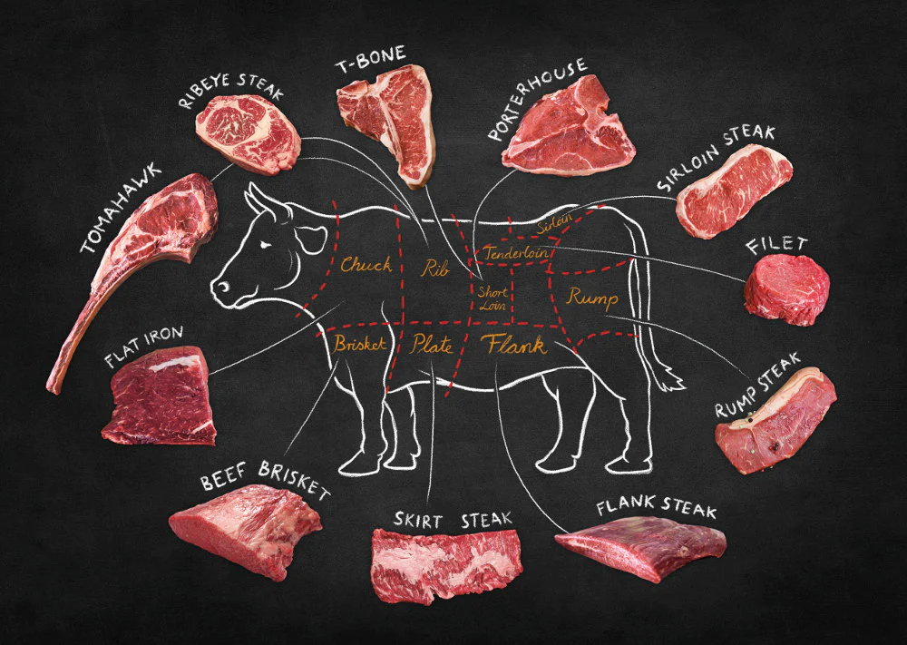

The Definition of Steak
Steak is usually a cut of meat that has been sliced across the muscle fibers of an animal. It may or may not include a bone. There are some exceptions to the rule, such as skirt or flank.
It does not just refer to meat from a cow. In fact, steak can come from pork, fish, lamb, or even portobello mushrooms!
This content, however, will only be covering the most popular cuts of beef steak.
